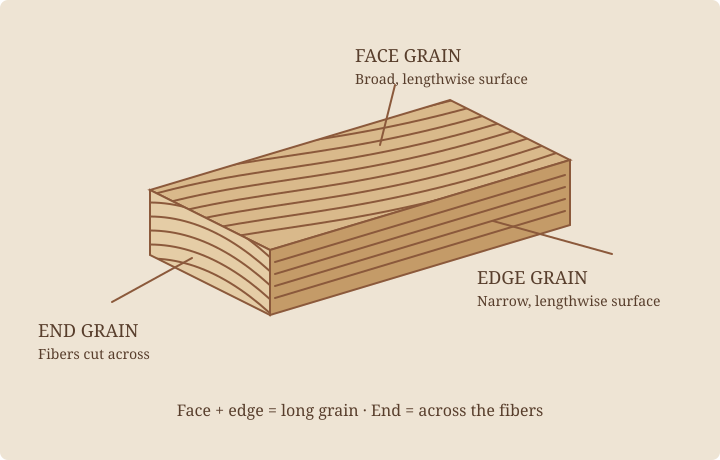

Start with the fibers. Most run along the trunk, and along the length of a typical board. Looking along those fibers is different from looking at their cut ends.
One board, three surfaces.

Face grain
The broad surface of a board is its face. This is usually what you see across a tabletop or door. Its pattern depends partly on how the board was sawn from the log.
Edge grain
The narrow, lengthwise surface is the edge. Like the face, it usually exposes the sides of the fibers: both are long grain. An edge-grain cutting board turns narrow edges upward; the term does not tell you whether the lumber was quarter sawn.
End grain
Cut across a board and you expose the ends of the fibers. Growth-ring lines are easiest to read here. End grain absorbs liquid and finish differently from long grain, so an exposed end may look darker after finishing. It also calls for different preparation when making a glue joint.
What this changes in a piece.
A maker considers which surface will be touched, seen, joined, or exposed to wear. A tabletop can show sweeping face grain while its edge reveals the board’s thickness. A joint needs enough suitable gluing area and geometry to carry its load; simply gluing one board’s end against another’s face is often insufficient.
Direction is not the same as pattern.
Long grain describes the direction of the fibers relative to a surface. Flat, quarter, and rift sawn describe growth-ring orientation relative to the broad face. A flat-sawn board still has face grain, edge grain, and end grain.
Read the end, understand the face.
The angle of the rings on the end helps explain the pattern on the face. Continue with flat, quarter, and rift sawn lumber →.
Further reading: USDA Forest Products Laboratory, Wood Handbook, chapters on wood structure and moisture.